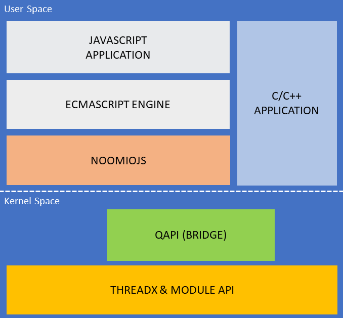

$> DigitalOut(PIN4).write(true);
NoomioJS
NoomioJS
NoomioJS allows Quectel modules to run JavaScript applications with a focus on documentation, debugging and ease of use. NoomioJS is great for IoT enablement such as sensors without the requirement of an external MCU.
NoomioJS is easy to integrate on a Quectel module: add noomiojs-X-X-X.bin, oem_app_path.ini, and your JavaScript application app.js to the /datatx folder on the user filesystem.
Simply use the standard ECMAScript E5/E5.1, and the API to realise your PoC or application!
The ECMAScript Engine used is Duktape. Please visit the link to find out how to integrate on your own project!
Interactive Console §
The interactive console allows you to connect to the JavaScript engine and easily test your scripts on the fly. Simply connect with your favourite terminal program such as minicom or putty and run JavaScript code interactively.
Write active high to output PIN 4:
Once this is executed and is out of scope it will be garbage collected automaticaly, finally the finaliser will be called and native code will de-initialise the pin configuration.
Write active low to output PIN 4:
$> DigitalOut(PIN4).write(false);
Simple, Easy and Quick!
Layer
Below is an overview of overall layer and where NoomioJS stands. The benefit is that you can still develop ThreadX applications as you would normally do.
Supported Modules
NoomioJS has been compiled for baseline TX3.0 and will not work on previous baselines.
- BG96
Main features
The ECMAScript Engine has been built with minimal options due to the ROM/RAM limitations of the Quectel modules.
| Baseline | ROM (MB) | RAM (MB) |
|---|---|---|
| TX2 | 3 | 3 |
| TX3 | 3 | 2 |
Code and RAM footprint
The LLVM compiler was used to create the prebuilt binary noomiojs-X-X-X.bin
| Config | Code footprint (kB) | RAM (kB) |
|---|---|---|
| thumb lowmem | ~310 | 512 |
Current status
- Development
Author
Nikolas Karakotas